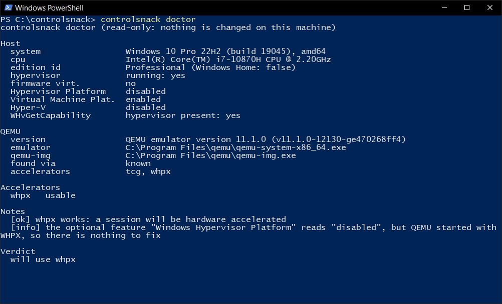
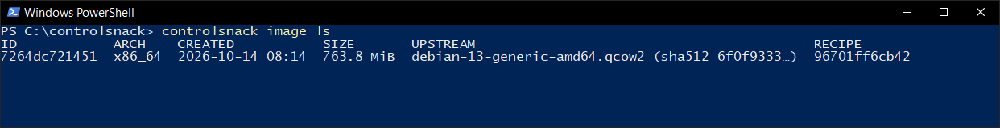
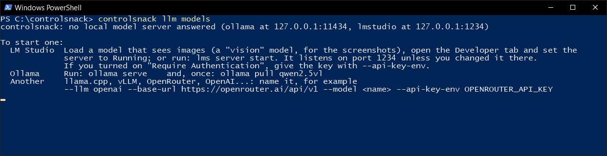
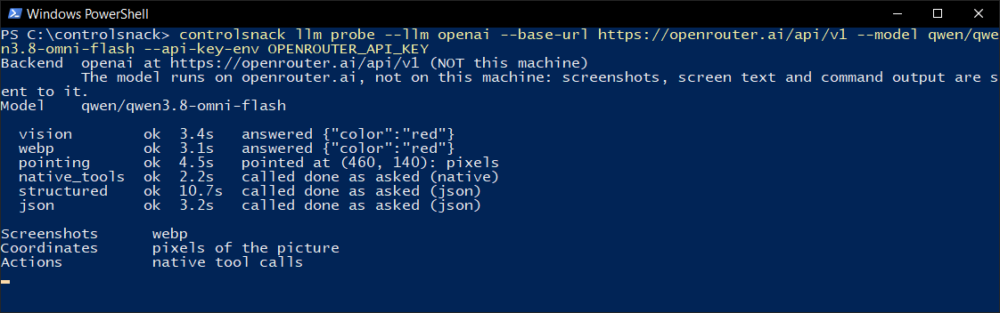
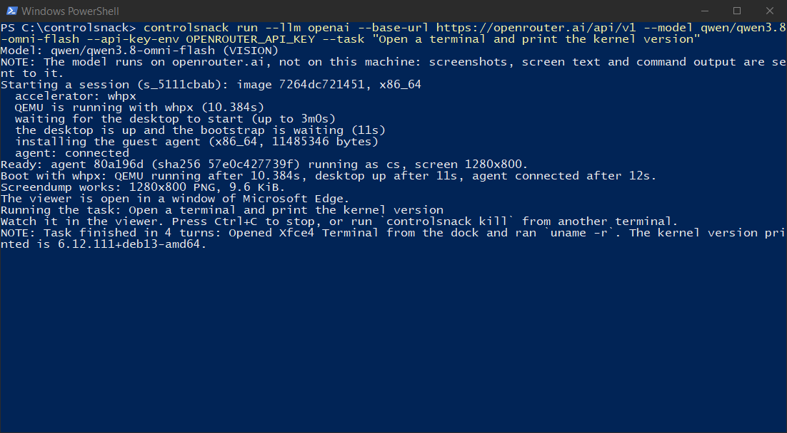
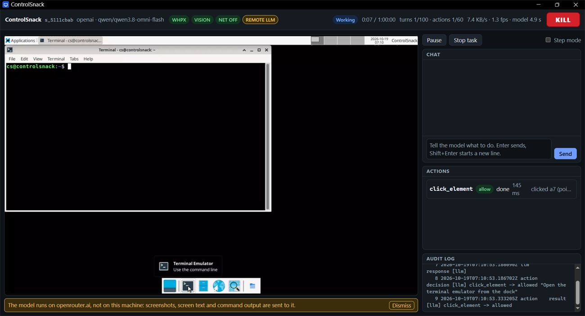
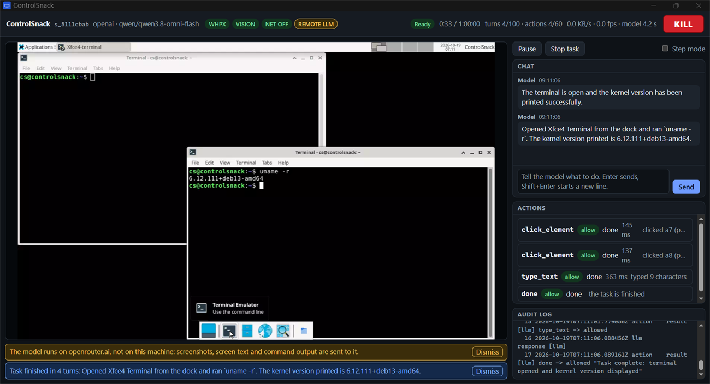
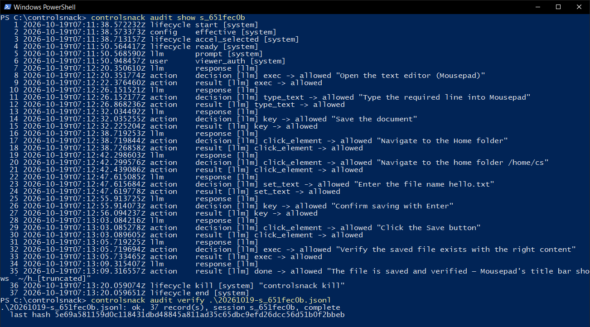

New here? Start here
ControlSnack lets an AI model use a computer for you, safely. It starts a small throwaway Linux computer inside a window on your machine (a virtual machine), shows you its screen, and lets the model look at that screen, click, type and run commands in it. Everything the model does is checked first and written down, and the little computer is deleted when you are done. Your own files are never in reach.
This part takes you from nothing to a first task, step by step, with screenshots of the real program. You need two things: ControlSnack and a model. The model can run on your own computer (path A) or be rented through an API (path B). The setup in the middle is the same for both.
Which path should I pick?
| A. A model on your computer | B. A model through an API | |
|---|---|---|
| Privacy | Nothing leaves your computer. | Every turn sends a screenshot of the little computer, the text of its screen and command output to the provider. ControlSnack tells you so each time it starts. |
| Cost | Free, after the download. | You pay the provider per use. Prices differ per model; look up your model's price before long runs. |
| What you need | A program that serves models (LM Studio or Ollama), a few GB of disk, and ideally a graphics card with 6 GB or more. It was tested on a laptop with a 6 GB card. | An account with a provider and an API key. Any computer that can run the virtual machine. |
| How well it works | A small model (4 billion parameters) did the simple task and failed the harder one in the author's tests. Bigger models do better and need more memory. | A hosted Qwen model did both tasks in the same tests. |
If you only want to see it work, take path B for the first run. If privacy or cost matters more, take path A and start with the simplest task.
Setup, once (both paths)
These steps are in a terminal: PowerShell on Windows, any terminal on macOS and Linux. The screenshots show the command as controlsnack. If you did not put the program on your PATH, type where it is instead: .\controlsnack.exe (Windows) or ./controlsnack inside the folder you unpacked in step 2, or .\dist\controlsnack.exe or ./dist/controlsnack if you built it yourself.
1. Install QEMU
QEMU is the program that runs the virtual machine.
winget install SoftwareFreedomConservancy.QEMU # Windows (PowerShell)
brew install qemu # macOS
sudo apt install qemu-system-x86 qemu-utils # Debian, UbuntuOpen a new terminal afterwards so it can find it. On Linux, hardware acceleration also needs access to /dev/kvm: sudo usermod -aG kvm $USER, then log in again.
2. Get ControlSnack
Download the archive for your system from the releases page on GitHub. Open the newest release (the one at the top) and look under Assets:
| Your system | The file to download |
|---|---|
| Windows 10 or 11, 64-bit | controlsnack_<version>_windows_amd64.zip |
| macOS, Apple silicon (M1 and later) | controlsnack_<version>_darwin_arm64.tar.gz |
| macOS, Intel | controlsnack_<version>_darwin_amd64.tar.gz |
| Linux, 64-bit Intel or AMD | controlsnack_<version>_linux_amd64.tar.gz |
| Linux, 64-bit ARM | controlsnack_<version>_linux_arm64.tar.gz |
The version is part of the file name; the examples here use v0.1.0-alpha.1, the first release. Unpack the file you downloaded, in the folder where you saved it. That makes a folder of the same name with the program inside, controlsnack.exe on Windows and controlsnack elsewhere, next to the license and the notices of the libraries it uses. There is nothing to install.
Expand-Archive .\controlsnack_v0.1.0-alpha.1_windows_amd64.zip -DestinationPath . # Windows (PowerShell)
tar -xzf controlsnack_v0.1.0-alpha.1_darwin_arm64.tar.gz # macOS; the Linux files unpack the same wayThen cd into the new folder (cd controlsnack_v0.1.0-alpha.1_windows_amd64 on Windows) so that the program is in the folder you are in.
Each release also has a file SHA256SUMS with the checksum of every archive, if you want to check that what you downloaded is what was published. The programs are not signed, so your system may object the first time. Windows may say the publisher is unknown: choose More info, then Run anyway. macOS puts a downloaded program in quarantine; lift it with xattr -d com.apple.quarantine ./controlsnack.
Or build it from source, if you would rather, or if there is no archive for your system. That needs Git and Go (1.26 or newer; the exact toolchain is fetched for you):
winget install Git.Git # Windows (PowerShell), one line each
winget install GoLang.Go
brew install git go # macOS
sudo apt install git golang-go # Debian, Ubuntugit clone https://github.com/PacifAIst/controlsnack
cd controlsnack
go run ./tools/dev buildThis takes a minute or two and leaves the program in the dist folder.
3. Ask doctor whether your computer can run it
controlsnack doctor

will use whpx (Windows), kvm (Linux) or hvf (macOS) means the virtual machine will be fast. will use tcg (slow) still works, only several times slower. cannot run a VM comes with numbered steps to fix it.4. Get the base image (the Debian desktop), once
controlsnack image buildIt downloads Debian, installs a desktop in a one-off boot and saves the result, about 765 MiB. It asks before it downloads. With hardware acceleration this takes minutes; with software emulation it took about 10 minutes on the author's machine and can take over 30 on slower ones. If someone gave you an image file and its manifest.json, controlsnack image import file.qcow2 --manifest manifest.json takes seconds instead.
controlsnack image ls

Path A: a model on your own computer
The model has to be able to see, because the screen reaches it as a picture. The steps below use LM Studio, which was tested. Ollama works the same way in principle and is at the end.
A1. Install LM Studio and download a vision model
Install LM Studio from its website (lmstudio.ai). In its search, look for a Qwen3-VL model of 4 billion parameters or more (the tests used qwen3-vl-4b-instruct, a 4-bit version, about 3 GB) and download it. Pick a model that can see images: a model that cannot see still works, but only through the accessibility tree and recognized text, and does less.
A2. Load it with a long enough context
Each turn sends a screenshot, and a screenshot costs many tokens, so the context length matters. Load the model with a context length of at least 8192 (16384 if your memory allows). With a shorter one the model forgets what it was doing, repeats itself, or gives answers that cannot be read, and the session pauses after three of those in a row.
A3. Start the server
In LM Studio open the Developer tab and set the server to Running. It listens on port 1234, on your own machine only. If you turned on “Require Authentication”, give the key with --api-key-env as in path B.
A4. Check that ControlSnack can see it
controlsnack llm modelsYou should see your model with yes in the VISION column and the context length you loaded. If the server is not running, this is what you get, and it tells you what to do:


Then test what the model can do:
controlsnack llm probe --llm lmstudio --model qwen3-vl-4b-instructIt asks the model six small questions (can it see, does it take WebP, can it point at things, can it call tools, can it answer in JSON) and prints ok or what failed. The probe of the API model in path B shows what a pass looks like.
A5. Run the first task
controlsnack run --llm lmstudio --model qwen3-vl-4b-instruct --task "Open a terminal and print the kernel version"The virtual machine starts (12 seconds with hardware acceleration), a window opens with its screen, and the model starts working. What you see is described in Reading the viewer. The screen looks the same as in path B, except that the top bar shows lmstudio and the model's name and has no REMOTE LLM badge.
What to expect. In the author's test the 4-billion-parameter model opened the terminal and printed the kernel version in 5 turns, 11 seconds after the desktop was ready, and it was right. It did not manage the harder task (open the text editor, type a line, save it as hello.txt): it opened the wrong program and lost its way, and the program stopped it after it started repeating itself. That says something about a small model, not about your setup. Try a bigger model, or give smaller steps.
Ollama instead
ollama pull qwen2.5vl
ollama serve
controlsnack run --llm ollama --model qwen2.5vl --task "Open a terminal and print the kernel version"The Ollama path was tested only against a stand-in server, not yet with a real model.
Path B: a model through an API (OpenRouter)
OpenRouter is one account that gives access to many models. The test below used qwen/qwen3.8-omni-flash. Any provider with an OpenAI-compatible API works the same way; OpenAI and Anthropic have their own settings in Recipes.
B1. Make an account and a key
Create an account at openrouter.ai, add a few dollars of credit, and make an API key on your account's keys page. Copy it once, when it is shown. Treat it like a password: whoever has it can spend your money.
B2. Give the key to the terminal without showing it
ControlSnack never takes the key on the command line. It takes the name of an environment variable that holds the key. In PowerShell, this asks for the key without showing it, and keeps it only in this window:
$k = Read-Host "OpenRouter key" -AsSecureString
$env:OPENROUTER_API_KEY = [System.Net.NetworkCredential]::new("", $k).PasswordIn bash or zsh: read -rs OPENROUTER_API_KEY; export OPENROUTER_API_KEY. Close the window and the key is gone from it.
B3. Test the model
controlsnack llm probe --llm openai --base-url https://openrouter.ai/api/v1 --model qwen/qwen3.8-omni-flash --api-key-env OPENROUTER_API_KEY

B4. Run the first task
controlsnack run --llm openai --base-url https://openrouter.ai/api/v1 --model qwen/qwen3.8-omni-flash --api-key-env OPENROUTER_API_KEY --task "Open a terminal and print the kernel version"

At the same time a window opened with the little computer's screen. The next part walks through it.
Reading the viewer
The viewer is the window that opens when a session starts. These pictures are from the run above, a few seconds apart.
![The ControlSnack viewer window just after the start. The top bar shows the session id, openai and the model name, the badges WHPX, VISION, NET OFF and REMOTE LLM, the state Working, a timer, turn and action counters, and a red KILL button. On the left is the guest desktop: an empty XFCE desktop with a panel at the top and a dock at the bottom. On the right are Pause, Stop task and Step mode, the chat and the list of actions, both empty, and the audit log with its first line. A yellow bar at the bottom says the model runs on openrouter.ai.](img/viewer-start.png)
- The top bar. The session, the backend and the model; WHPX says the machine is hardware accelerated (it says TCG when it is not); VISION says the model sees pictures (it says TEXT-ONLY otherwise); NET OFF says the little computer has no internet (NET ON with
--allow-net); REMOTE LLM appears when the model is not on your machine. Then the state, the time used out of the time allowed, the turns and actions used, and how fast pictures and the model are going. - KILL ends the virtual machine at once.
- The screen is the little computer's screen, live. This is what the model sees too.
- Pause holds the model's task and Resume continues it; Stop task ends the task and leaves the machine up for the next; Step mode asks you before every action.
- Chat. Type a task here if you did not give one on the command line. The model's own words appear here as it works, and your answers to its questions.
- Actions lists what the model did: the tool, whether the rules allowed it, and how it went. Audit log is the tail of the session's audit log: one line for each record as it is written, the same lines
audit showprints afterwards.


click_element -> allowed.

To end the session, press KILL, press Ctrl+C in the terminal, or run controlsnack kill in another one. The little computer is deleted. More ways to stop it are in Stopping a session.
A longer task
The same model, asked to open the text editor, type a line and save it as hello.txt in the home folder:
![The viewer at the end of a longer task. The text editor Mousepad is open with the title ~/hello.txt and the line hello from controlsnack. The chat shows the model's final summary: it opened Mousepad, typed the line, saved it as /home/cs/hello.txt through File, Save As, and verified on disk that the 23-byte file exists with the right content. The actions list ends with set_text, key, a click_element that failed, an exec and done. A blue bar says the task finished in 10 turns. The audit log shows the last records.](img/viewer-editor.png)
~/hello.txt, and the model checked it from the command line before it said it was done. One action in the list says failed: the model clicked a Save button that had already gone because the dialog had closed. A failed action is not an error of the program; the model is told what happened, reads the screen again and goes on.Look at what happened afterwards
Every session leaves an audit log, whether or not you kept anything else:
The session id is in the top bar of the viewer and in the terminal (s_651fec0b here). audit show takes it; audit verify takes the path of the log file, which audit ls names and which is in the audit folder (where).
controlsnack audit show s_651fec0b
controlsnack audit verify "$env:LOCALAPPDATA\ControlSnack\audit\20261019-s_651fec0b.jsonl"

kill near the end is from controlsnack kill, which ended the session after the task was done. audit verify checks that no record was changed, removed or reordered.If something goes wrong
| What you see | What to do |
|---|---|
no local model server answered | Start LM Studio's server (step A3) or Ollama, or name another server with --llm, --base-url and --model. |
the environment variable OPENROUTER_API_KEY is empty or not set | Do step B2 again in this terminal window. A variable set in another window is not here. |
cannot run a VM or exit code 3 | Run controlsnack doctor; it lists the fixes. Most often QEMU is not installed or not found (--qemu points to it). |
| Exit code 4, no base image | Do setup step 4: controlsnack image build, or image import. |
| It is very slow | The verdict of doctor was tcg. Hardware acceleration needs virtualization turned on in the firmware, and on Windows the “Windows Hypervisor Platform” feature may help. doctor says what applies. |
| No window opened | No Edge, Chrome, Chromium or Brave was found, so the viewer opened in your default browser instead, or its address was printed. --viewer browser asks for the browser on purpose. |
| The model repeats itself, or the task pauses | Run controlsnack llm probe. Usual causes: a context that is too short (load the model with 8192 or more), or a model that cannot see. Press Resume, or Stop task and give a smaller task. |
| The model asks you something, or a box asks you to approve an action | The rules want your say. Answer in the chat, or press approve or reject. An action nobody answers within two minutes counts as rejected. |
| Another session is running | Only one runs at a time per user. controlsnack kill ends it. |
When you are ready for more: Recipes has commands for other models, for letting the guest browse a site, for scripts and for keeping a machine between sessions, and The policy file says how to change what the model may do. If you find something that does not work, the test form on the home page builds a report you can send.
How to read this page
This documentation is at https://controlsnack.smartcityjaen.workers.dev/docs. The same page is site/docs.html in the source, at https://github.com/PacifAIst/controlsnack, together with the guide for newcomers as docs/GETTING-STARTED.md.
controlsnack is one program. On Windows it is controlsnack.exe. It is in the folder a downloaded archive unpacks to, or in the dist folder after go run ./tools/dev build, so the examples below that start with controlsnack become .\controlsnack.exe in PowerShell and ./controlsnack elsewhere in the first case, and .\dist\controlsnack.exe and ./dist/controlsnack in the second, unless you put it on your PATH.
Every flag is described the same way:
- Its form:
--cpus Ntakes a number,--task TEXTtakes text, a flag with no value (--step) is a switch. Quote values that contain spaces. - Its default: what you get when you do not set it.
- Its configuration key: the same setting for the config file, like
vm.cpus. See Configuration for the file and for the environment variable every key has.
Where a setting comes from. From strongest to weakest: a flag on the command line, then an environment variable, then the config file, then the built-in default. controlsnack config show prints what is in force.
Three rules that hold everywhere.
- The VM never has a network device.
--allow-netopens a bridge that the host checks; it does not add a network card. --unsafeexists only as a flag. No config file or environment variable can switch it on (details).- An API key is never typed on the command line. You give the name of an environment variable that holds it (details).
Everything below was checked against the program: a test that runs with every change walks the real command tree and fails if a command, a flag, a configuration key, an exit code, a built-in rule or a tool of the program is missing from this page. It cannot judge whether a sentence is right. If the program does something this page does not say, the program is right, and the mismatch is a bug in the page that we want to hear about.
All commands
| Command | What it does |
|---|---|
controlsnack run | Boots the VM, opens the viewer and lets the model work on a task. |
controlsnack doctor | Reports what this machine can run and which accelerator a session would use. Changes nothing. |
controlsnack image build | Downloads Debian, builds the desktop image once and seals it. |
controlsnack image import | Brings in an image built on another machine. |
controlsnack image ls | Lists the images you have. |
controlsnack image path | Prints where an image file is. |
controlsnack image verify | Checks an image against its manifest. |
controlsnack image rm | Deletes an image. |
controlsnack llm models | Lists the models a backend offers. |
controlsnack llm probe | Tests what a model can do: see, take WebP, call tools, answer in JSON. |
controlsnack kill | Ends the running session from any terminal. |
controlsnack audit ls | Lists the audit logs. |
controlsnack audit show | Prints one audit log. |
controlsnack audit verify | Checks a log's hash chain for edits, deletions, reordering and truncation. |
controlsnack audit prune | Deletes logs older than the retention period. |
controlsnack vm ls | Lists kept VMs (made with run --keep-vm). |
controlsnack vm rm | Deletes a kept VM. |
controlsnack config show | Prints the configuration in force, with secrets masked. |
controlsnack config path | Prints where the config file is, and whether it exists. |
controlsnack schema | Prints the tool schema in the format of a backend. |
controlsnack version | Prints the version, commit, Go version and platform. |
controlsnack completion | Prints the completion script for bash, zsh, fish or PowerShell. |
controlsnack help COMMAND and controlsnack COMMAND --help print the built-in help of a command. Run with no command, controlsnack prints the top-level help.
Global flags
These flags work on every command. They come before or after the command name.
--config FILE
The YAML file to read settings from. If you do not give this flag and the default file does not exist, that is fine: the built-in defaults are used. If you do give it, the file must exist, and an unreadable or malformed file is an error that names the file. Unknown keys in the file are errors too, so a typo cannot silently do nothing. The file may not contain safety.unsafe. controlsnack kill ignores a broken config file on purpose, so a mistake in the file can never stop you from ending a session.
--log-level LEVEL
How much the program writes about itself on standard error. debug is for finding out why something does not work. This is not the audit log: the audit log is always written and has its own commands (audit).
--log-format FORMAT
The shape of those diagnostic lines: readable text, or one JSON object per line for a program to read.
-h, --help
Prints the built-in help of the command and stops. It works even when the configuration is broken.
-v, --version
On the program itself (controlsnack --version): prints controlsnack and the version, then stops. controlsnack version prints more.
controlsnack run
Boots a throwaway Linux VM, opens the viewer, and runs the loop in which the model looks at the screen and acts. This is the command you use. Everything else prepares for it or looks at what it left.
controlsnack run --task "Open a terminal and print the kernel version"What happens, in order
- The settings are checked. All mistakes are listed at once, each with the flag, the configuration key and what is allowed. Exit code 2.
- The session lock is taken. Only one session runs per user. A lock left behind by a crash is cleaned up, together with a QEMU it orphaned.
- The accelerator is chosen by trying QEMU, the same decision
doctorreports. If a hardware accelerator fails to launch,runretries once with software emulation and says so in the terminal, in the viewer and in the audit log. - The model is found and probed. With a remote model you are told that screenshots, screen text and command output go to it.
- The VM boots, the desktop comes up, the guest agent is installed and answers. The terminal prints
Readywith the time each step took. - The viewer opens (unless
--viewer none). - The task loop runs. Each turn the model gets an observation, answers with actions, and every action is checked, judged by the policy, written to the audit log, and only then run in the VM. The result goes back to the model.
- The session ends when the model says it is done, when you stop it, or when a limit is reached. The VM disk is deleted unless you kept it, and the terminal prints one summary line with the path of the audit log.
What the terminal prints
A real session, abridged (a remote model on Windows with hardware acceleration):
Model: qwen/qwen3.8-omni-flash (VISION)
NOTE: The model runs on openrouter.ai, not on this machine: screenshots, screen text and command output are sent to it.
Starting a session (s_45359cad): image 7264dc721451, x86_64
accelerator: whpx
QEMU is running with whpx (10.39s)
waiting for the desktop to start (up to 3m0s)
agent: connected
Ready: agent e865101 running as cs, screen 1280x800.
Boot with whpx: QEMU running after 10.39s, desktop up after 11s, agent connected after 12s.
Running the task: Open a terminal and print the kernel version
model: I'll open the terminal from the dock.
turn 1, click_element t1a1 (done): clicked a7 (pointer)
turn 3, type_text t3a1 (done): typed 9 characters
turn 4, done t4a1 (done): the task is finished
NOTE: Task finished in 4 turns: Opened the Xfce terminal and ran `uname -r`.
Session s_45359cad ended (task done) after 16s: 4 turns, 4 actions (4 allowed). Accelerator: whpx. Audit log: ...\audit\20261018-s_45359cad.jsonlHeadless runs. With --viewer none nothing is shown and the terminal carries everything. A task that pauses (a model that cannot be understood, a screen that cannot be read) cannot be resumed by anyone, so the run ends with exit code 1 and says why. The model finishing with success ends the run with exit code 0; the model giving up ends it with 1.
Task and session
--task TEXT
What you want done, in your own words. Without it the viewer opens and you type the task in its chat box, and you can give the next task when one is done. With --viewer none there is no chat, so --task is required. It cannot be combined with --no-llm.
--timeout DURATION
The longest the whole session may last, written like 90s, 45m or 2h. When it runs out the session ends with exit code 6. The idle timeout (safety.idle_timeout, default 15 minutes, config file only) ends a session in which nobody has done anything while it was ready or paused, and it may not be longer than this timeout: to set --timeout below 15 minutes, lower safety.idle_timeout in the config file as well.
--max-turns N
How many times the model may be asked per task before the task stops for a check-in. A turn is one question to the model and the answer with its actions. Raise it for long tasks; lower it to bound the cost of a remote model.
--step
Asks you before every action, in the viewer, and runs the action only if you approve. Use it when you want to watch a model's first steps on something that matters. It wins over everything else, --unsafe included. Questions that nobody answers within safety.confirm_timeout (default 2 minutes) count as rejected.
--keep
Keeps what the model was shown, after the session, in a folder named after the session under kept in the state folder (where). It holds transcript.jsonl (the conversation), shots/ (the pictures the model was given, one per turn), requests/turn-NNNN.txt (the text of what the model was asked each turn, the observation and the earlier results), and ready.png. Without --keep nothing of this is left behind. This is the way to find out why a model did what it did.
--keep-vm[=NAME]
Keeps the VM's disk when the session ends, so the next session can pick up where this one left off: files, installed programs, settings. The guest is powered off cleanly first (about 4 to 5 seconds), so what was written in the session is on the disk. Give a name with an equals sign, --keep-vm=work; a bare --keep-vm names it vm- followed by the session's id. A VM that never got as far as booting is not kept. List kept VMs with vm ls, delete one with vm rm. Cannot be combined with --vm.
--vm NAME
Resumes a kept VM instead of starting from the base image. The VM stays where it is, with what this session did to it, until you delete it with vm rm. Only one session can use a kept VM at a time. Cannot be combined with --keep-vm.
--no-llm
Boots the VM, checks that the agent answers and a screenshot works, and holds the machine without a model, until you stop it or the timeout ends it. For testing the sandbox and the accelerator without a model server. No model is looked for and no API key is needed. Cannot be combined with --task.
The model
ControlSnack talks to a model server you already run, or to a hosted API. Which models were tested is listed on the home page; llm probe tells you what your own model can do.
--llm BACKEND
auto looks for a server on your own machine: Ollama on port 11434, LM Studio on port 1234 (and on the port its own status file names, if you changed it) and llama.cpp on port 8080, and picks the first model that can see pictures. It never looks anywhere but 127.0.0.1. If it finds none it says how to start one. The others name the protocol to speak: ollama; lmstudio and llamacpp (both OpenAI-compatible, with their usual addresses); openai, for OpenAI itself and for anything with an OpenAI-compatible API such as OpenRouter; anthropic for the Anthropic API.
--model NAME
The model's name exactly as the backend lists it (llm models prints the names). Required for the hosted backends, for example qwen/qwen3.8-omni-flash on OpenRouter. A model that cannot see pictures runs in a degraded text-only mode, in which it reads the screen as the accessibility tree and recognized text; you are told when that happens.
--base-url URL
Where the backend is, for a server on another port or another machine, or for a hosted service: https://openrouter.ai/api/v1. The usual addresses are http://127.0.0.1:11434 (Ollama), http://127.0.0.1:1234/v1 (LM Studio), http://127.0.0.1:8080/v1 (llama.cpp), https://api.openai.com/v1 and https://api.anthropic.com. The URL must be http:// or https://, may not contain a user name or password (the key goes through --api-key-env), and a host that is not on your machine must use https:// unless you pass --unsafe. A non-local host counts as remote: the session says so and the audit log records it.
--api-key-env NAME
The name of the environment variable that holds the API key, for example OPENROUTER_API_KEY. Not the key. A value that does not look like a variable name is refused. If the variable is empty or unset, the run stops before anything starts, and says which variable. Other places the key may come from are in API keys.
--tools PROFILE
Which tools the model is offered. full offers all fifteen. compact offers nine (it leaves out screenshot, set_text, read_screen_text, browser, scroll and window): fewer choices help a small model. auto picks compact for a model on your machine and for text-only mode, and full for a remote one.
--obs-format FORMAT
How the observation that goes with each screenshot is written: as plain labeled lines (the default), or as a JSON object. The content is the same.
--marks MODE
Draws numbered boxes over the elements the accessibility tree found, on the picture the model is shown, so a model can name an element instead of guessing coordinates. auto is on for a model on your machine that can see, and off otherwise. Marks need the accessibility tree and a model that sees pictures.
Four more model settings have no flag, only a configuration key: llm.image_max (the longest edge of the pictures sent, default 1280 pixels), llm.num_ctx (the context length requested from Ollama, default 16384), llm.first_timeout (how long the first answer may take while a model loads, default 10 minutes) and llm.timeout (later answers, default 3 minutes). See every key.
The guest machine
--accel ACCEL
The way QEMU runs the guest. auto tries the hardware accelerator of your system and falls back to tcg. A hardware accelerator that does not belong to your system is an error. Hardware is several times faster than tcg: a desktop was ready in 12 seconds with WHPX and in 61 to 75 seconds with software emulation on the author's machine. Also accepted by doctor and image build.
--slow
Shorthand for --accel tcg: software emulation, which works on every machine. Combined with a hardware accelerator it is an error. Also accepted by doctor and image build.
--qemu DIR
The folder that holds qemu-system-x86_64 (or the one for your guest) and qemu-img. Needed only when QEMU is installed somewhere unusual. Also accepted by doctor and image build.
--cpus N
How many virtual processors the guest has.
--memory MIB
The guest's memory in mebibytes. A browser with many tabs wants more than the default.
--resolution WIDTHxHEIGHT
The guest's screen. A bigger screen shows more but makes every picture the model gets larger and slower to read; the picture is scaled down to llm.image_max before it is sent.
--image ID_OR_PATH
Which base image to start from: an id from image ls, or the path of an image file. If there is none, the run stops with exit code 4 and tells you to build or import one.
The viewer
The viewer is a page served by the program on 127.0.0.1 only. It shows the guest's screen, the model's actions as they happen, a chat box, the buttons to pause, resume and approve, and the Kill button. You open it through a single-use link, which sets a cookie; nothing else on your machine can use the page without it.
--viewer MODE
window opens the viewer in a window of its own, using Edge, Chrome, Chromium or Brave in app mode (no tabs, no address bar). If none of them is found it opens your default browser in a tab, and if even that fails it prints the address. browser asks for the default browser's tab on purpose, for any browser. none shows nothing and is for scripts and tests: it needs --task, and with a model it also needs --unsafe, because nobody is watching and nobody can approve anything. webview is reserved for a native window that is not built yet; it opens the window mode and says so. Three more settings of the viewer have no flag: viewer.fps_active, viewer.fps_idle and viewer.webp_quality (every key).
Network
The VM has no network card. Without --allow-net the guest cannot reach anything, and its browser says so. With it, the guest's HTTP and HTTPS requests go through a proxy to the host, which dials only after checking the policy below. The host always refuses loopback, private, link-local, metadata and other non-public addresses, and judges every address a name resolves to, so a name that points inside your network does not get through.
--allow-net
Lets the guest reach the public web over that bridge. Web only: no LAN, no raw sockets, no other protocols. It lets a model cause real effects in the world (posting, buying, sending), even though the VM is isolated, so narrow it with --allow-domain. The rules that ask your approval for network actions stay on.
--allow-domain DOMAIN
Only these domains, and their subdomains, can be reached. Repeat the flag or separate with commas: --allow-domain example.com --allow-domain openrouter.ai. A plain name only: no scheme, port, path or wildcard, and no IP address (addresses are always checked against the blocklist). The config key net.deny_domains is the opposite list and has no flag.
--allow-port PORT
Allows one more TCP port, 1 to 65535, besides 80 and 443. Repeat for more. Giving it (or --allow-domain) without --allow-net is an error.
Safety and limits
--policy FILE
A YAML file of your own rules, merged over the built-in ones. It can add rules, change how a built-in rule is treated, and switch to a strict allowlist. It can never weaken the rules that keep the analysis sound. Unknown keys are errors. The format is in The policy file.
--actions-per-sec RATE
The most actions that run per second. An action that comes sooner is held back until it is its turn; if it would have to wait more than 2 seconds it is refused with the error rate_limited and the model is told, and it costs nothing against the budgets.
--actions-per-response N
How many actions from one answer of the model are run. Actions beyond this are not run and the model is told so.
--actions-per-task N
How many actions one task may run before it stops for a check-in. A task that needs more than that should be split, or run with a higher limit under --unsafe.
--unsafe
Relaxes the limits and the confirmations. It is a flag and nothing else: a config file that contains safety.unsafe, or an environment variable CONTROLSNACK_SAFETY_UNSAFE, is an error and the program refuses to start. Exactly what it changes, and what it never changes, is in the next part.
What --unsafe changes
| Setting | Normal | With --unsafe |
|---|---|---|
| Actions per second | up to 2 | up to 10 |
| Actions per response | up to 3 | up to 10 |
| Actions per task | up to 60 | up to 500 |
| Turns per task | up to 100 | up to 500 |
| Session time | up to 1 hour | up to 8 hours |
| A rule that says confirm | asks you | allows, and still records it |
| A rule that says deny | refuses | asks you instead |
A model with --viewer none | not allowed | allowed (nobody can approve anything, so an action that needs approval is not run) |
A model endpoint on another host over http:// | refused | allowed |
The viewer shows an UNSAFE badge and the audit log records it. --step still wins: with both flags every action asks you. What --unsafe never relaxes is listed in Guarantees in every mode.
controlsnack doctor
A read-only report on your machine: the system, its virtualization support, QEMU, and the accelerator a session would use. It changes nothing and never asks for administrator rights. Run it first, and again whenever something is slow or will not start.
controlsnack doctorOn the author's Windows 10 machine (abridged):
Host
system Windows 10 Pro 22H2 (build 19045), amd64
Hypervisor Platform disabled
WHvGetCapability hypervisor present: yes
QEMU
version QEMU emulator version 11.1.0
accelerators tcg, whpx
Accelerators
whpx usable
Notes
[ok] whpx works: a session will be hardware accelerated
[info] the optional feature "Windows Hypervisor Platform" reads "disabled", but QEMU started with WHPX, so there is nothing to fix
Verdict
will use whpxThe last line is the verdict a run would act on: will use kvm, will use whpx or will use hvf; will use tcg (slow) when only software emulation works; or cannot run a VM, with numbered steps to fix it. doctor decides by trying QEMU, not by reading a setting, which is why it can say that WHPX works although a Windows feature reads disabled.
Exit code: 0 when a VM can run, 3 when it cannot.
--json
Prints the same report as JSON, for a script.
doctor also accepts --accel, --slow and --qemu, with the meaning they have for run: ask what would happen with a given accelerator, or point it at a QEMU in an unusual place.
controlsnack image
The base image is the Debian desktop every session starts from. You build it once (or import one built elsewhere); each session works on a throwaway copy, so the base image is never changed. image by itself prints its help; the work is done by its subcommands.
The one time a VM has a network. Building the image is the only time ControlSnack gives a VM a network connection, so that it can download Debian packages. No model is involved in that boot, and it is a separate code path that run cannot select.
controlsnack image build
Downloads the official Debian generic cloud image (its checksum is verified), installs the desktop (XFCE), the browser (Chromium) and the guest agent in a one-off provisioning boot, and seals the result with a manifest.
controlsnack image buildWith hardware acceleration this takes minutes. With software emulation it took 10 minutes 35 seconds on the author's machine, and on slower hardware it can take more than 30 minutes. The image is about 765 MiB. The program asks before it downloads.
--force
Builds again even if an image made from the same recipe already exists.
--yes
Does not ask before downloading. For scripts.
Also accepts --accel, --slow and --qemu. The build needs HTTPS access to cloud.debian.org and the Debian mirrors; behind a proxy or offline, build on another machine and use image import.
controlsnack image import QCOW2 --manifest FILE
Brings in an image that was built on another machine (for an offline computer, or to save the build time). It takes the path of the .qcow2 file and the manifest.json that was made with it. Before storing anything it checks that the manifest is valid, that the file is a qcow2 image of the size the manifest records, and that its SHA-256 is the recorded one; an image that is already in the store is refused.
controlsnack image import base-7264dc721451.qcow2 --manifest manifest.json--manifest FILE
The manifest of the image. Without it the command stops with a usage error. Importing took 7 seconds for the 765 MiB image on the author's machine.
controlsnack image ls
Lists the images you have.
ID ARCH CREATED SIZE UPSTREAM RECIPE
7264dc721451 x86_64 2026-10-14 08:14 763.8 MiB debian-13-generic-amd64.qcow2 (sha512 6f0f9333…) 96701ff6cb42The id is what run --image takes. The upstream column names the Debian image it was built from, the recipe column the version of the build recipe.
controlsnack image path [ID]
Prints the path of the image file. Without an id it is the newest image.
controlsnack image verify [ID]
Checks an image file against its manifest (the newest one if you give no id), so you know it is the one that was built and that nothing damaged it.
ok 7264dc721451 ...\images\base-7264dc721451.qcow2controlsnack image rm ID
Deletes an image. A kept VM is made from a base image and needs it to be resumed, so keep the image for as long as you want those VMs.
controlsnack llm
Finds and tests model backends, without starting a VM. It has four flags of its own, and they are the same four that run has, with the same meaning and defaults: --llm, --model, --base-url and --api-key-env. Give them before or after the subcommand. The settings come from the config file and environment too, so if you have set them there, controlsnack llm probe tests what run would use.
controlsnack llm models
Lists the models the backend offers, and which of them can see pictures and call tools.
Backend lmstudio at http://127.0.0.1:1234/v1 (this machine)
MODEL VISION TOOLS CONTEXT LOADED
qwen3-vl-4b-instruct yes yes 8192 yes
gemma-4-e4b-it no yes 131072
llama-3.2-3b-instruct no ? 131072
Without --model, a session would use qwen3-vl-4b-instruct.With --llm auto (the default) it looks for Ollama, LM Studio and llama.cpp on your machine, and says "no model server found" with the steps to start one if there is none. The context column is the length of the conversation the model can hold: for a model that is loaded, the length it was loaded with. A small one (4096 or 8192) is the usual reason a long task goes wrong.
controlsnack llm probe
Tests what a model can really do, with a few small requests, and prints how a session would use it. Run it for any new model.
controlsnack llm probe --llm openai --base-url https://openrouter.ai/api/v1 --model qwen/qwen3.8-omni-flash --api-key-env OPENROUTER_API_KEYBackend openai at https://openrouter.ai/api/v1 (NOT this machine)
The model runs on openrouter.ai, not on this machine: screenshots, screen text and command output are sent to it.
Model qwen/qwen3.8-omni-flash
vision ok 2.7s answered {"color":"red"}
webp ok 1.9s answered {"color":"red"}
pointing ok 4.6s pointed at (460, 140): pixels
native_tools ok 2.3s called done as asked (native)
structured ok 3.1s called done as asked (json)
json ok 1.7s called done as asked (json)
Screenshots webp
Coordinates pixels of the picture
Actions native tool calls- vision: can the model tell the color of a picture it is shown? If not, the session runs in text-only mode.
- webp: does it accept WebP pictures (smaller and faster)? If not, JPEG is sent.
- pointing: where does it say a point is, in pixels of the picture, or on a 0 to 1000 scale (some models, such as Qwen3-VL in LM Studio, do)? The probe finds out, and sessions convert correctly.
- native_tools: can it call tools the way the API intends? This is the best way to drive a session.
- structured, json: if it cannot, can it answer in JSON held to a schema, or in JSON asked for in the prompt? A model that can do none of the three cannot be used, and the probe says so.
The result is remembered (in the cache folder) so a session does not repeat the tests. Against a hosted API the probe costs a few small requests.
controlsnack kill
Ends the session that is running as your user, from any terminal. It ends the VM's QEMU process at once and closes the viewer. It needs no configuration: it works even if the config file is broken, and if the session does not answer within a second it ends QEMU and the controller directly. If nothing is running it says no session is running.
controlsnack killOn the author's machine the VM was gone 118 to 140 milliseconds after the signal on Windows, and 8 to 17 on Linux. Other ways to stop a session are in Stopping a session. The command has no flags of its own.
controlsnack audit
Every session writes an audit log: one JSON record per line, each carrying the hash of the one before it, so a change anywhere in the file is detectable. What a record holds: a sequence number, a time, the session, a kind (lifecycle, config, llm, action), an event, who did it (system, llm or you), the data, the previous hash and its own hash. The decision about an action is written before the action runs; if a record cannot be written, the session ends. The logs are in the state folder (where), and the model's arguments are in them with secrets redacted. audit by itself prints its help.
controlsnack audit ls
Lists the logs: the date, the session id, how many records, the size, whether the log is complete (it ends with the session's end record) or was cut short (a crash, a power cut), and the file name.
DATE SESSION RECORDS SIZE STATE FILE
2026-10-18 s_45359cad 17 9.0 KiB complete 20261018-s_45359cad.jsonlcontrolsnack audit show REF
Prints a log, as one readable line per record. REF is a file path or a session id.
7 2026-10-18T18:54:22.199774Z action decision [llm] exec -> allowed "Launch the text editor (mousepad)"
8 2026-10-18T18:54:24.218240Z action result [llm] exec -> allowed
10 2026-10-18T18:54:26.858280Z action decision [llm] type_text -> allowed "Type the required line into the document"--raw
Prints the lines as they are stored, in full, instead of one readable line per record. Use it to see the arguments of an action, the rules that decided, and the hashes.
controlsnack audit verify FILE
Checks the hash chain of a log file for edits, deleted records, reordered records and a truncated end.
20261018-s_fc58bbe7.jsonl: ok, 32 record(s), session s_fc58bbe7, complete
last hash 4121b0bf7bd7cb33c3baeba935335f4dabe4d6a52f8cd6c4fc426035d0999a7cKeep the last hash somewhere else if you want to be able to prove later that the end of a log was not cut. The command takes a path, not a session id.
controlsnack audit prune
Deletes the logs older than the retention period. Nothing is deleted automatically.
--older-than AGE
An age written like 30d, 2w or 36h.
controlsnack vm
Manages the VMs you kept with run --keep-vm. A kept VM is a disk that holds what a session did, to be resumed with run --vm. vm by itself prints its help.
controlsnack vm ls
Lists the kept VMs. With none it says No kept VMs. Start one with: controlsnack run --keep-vm=NAME.
controlsnack vm rm NAME
Deletes a kept VM and its disk. A VM that a session is using now cannot be deleted.
controlsnack config
Shows how the program is configured, and where each part comes from. config by itself prints its help. The file and its keys are described in Configuration.
controlsnack config show
Prints the configuration in force: flags, then the environment, then the file, then the defaults, already merged. Secrets are masked. The first line says which file was read, or that none was.
controlsnack config show --llm openai --model qwen/qwen3.8-omni-flash--json
Prints it as JSON.
controlsnack config path
Prints the path where the config file is expected, and says whether it exists yet: ...\controlsnack\config.yaml (does not exist yet). The program never creates it for you.
controlsnack schema
Prints the JSON description of the model's tools, in the format a given backend wants. For developers who connect a model of their own and for anyone curious about exactly what the model is offered. The tools are listed in The model's tools.
controlsnack schema --format openai --tools compact--format FORMAT
Whose tool format to print. jsonmode is one schema for a model that answers in JSON without native tool calls.
--tools PROFILE
Which tools to print; see run --tools. Here auto does not exist, because there is no model to decide it for.
controlsnack version
Prints the version, the commit, the build time, the Go version and the platform it was built for.
controlsnack e865101
commit: e865101
built: 2026-10-18T20:47:04+02:00
go: go1.26.9
os/arch: windows/amd64Put this in a bug report or in the test form's version field.
--json
Prints the same facts as a JSON object.
controlsnack completion
Prints a script that lets your shell complete command and flag names with the Tab key. Each subcommand prints the script for one shell, and has one flag, --no-descriptions, which leaves the explanations out of the suggestions.
controlsnack completion bash
Needs the bash-completion package. For this session: source <(controlsnack completion bash). For every session, once: on Linux controlsnack completion bash > /etc/bash_completion.d/controlsnack, on macOS controlsnack completion bash > $(brew --prefix)/etc/bash_completion.d/controlsnack. Start a new shell afterwards. Flag: --no-descriptions.
controlsnack completion zsh
If completion is not enabled in your zsh yet, run once echo "autoload -U compinit; compinit" >> ~/.zshrc. For this session: source <(controlsnack completion zsh). For every session, once: on Linux controlsnack completion zsh > "${fpath[1]}/_controlsnack", on macOS controlsnack completion zsh > $(brew --prefix)/share/zsh/site-functions/_controlsnack. Flag: --no-descriptions.
controlsnack completion fish
For this session: controlsnack completion fish | source. For every session, once: controlsnack completion fish > ~/.config/fish/completions/controlsnack.fish. Flag: --no-descriptions.
controlsnack completion powershell
For this session: controlsnack completion powershell | Out-String | Invoke-Expression. For every session, add that line to your PowerShell profile (notepad $PROFILE). Flag: --no-descriptions.
Configuration file and environment
You never have to write a config file. Every setting has a default and most have a flag. A file is for settings you always want, so you do not type them each time.
The file
A YAML file named config.yaml in the configuration folder (where it is on your system). controlsnack config path prints the exact path and says whether it exists. It is never created for you. Use another file with --config. Keys are grouped in sections, so vm.memory_mib is the key memory_mib in the section vm:
vm:
memory_mib: 4096
cpus: 4
llm:
backend: lmstudio
model: qwen3-vl-4b-instruct
safety:
timeout: 30m
idle_timeout: 10m
net:
allow_domains: [example.com, openrouter.ai]Durations are written like 90s, 15m or 2h. Lists are YAML lists. A key that does not exist, or a value out of range, is an error that names the key, so a typo can never be silently ignored. The key safety.unsafe is not allowed in the file.
The environment
Every configuration key can be set with an environment variable: CONTROLSNACK_ followed by the key in capitals with the dots turned into underscores. vm.memory_mib is CONTROLSNACK_VM_MEMORY_MIB, llm.backend is CONTROLSNACK_LLM_BACKEND, net.allow_domains is CONTROLSNACK_NET_ALLOW_DOMAINS (a list is written with commas: example.com,openrouter.ai). An empty variable counts as not set.
$env:CONTROLSNACK_VM_MEMORY_MIB = "4096" # PowerShell
export CONTROLSNACK_VM_MEMORY_MIB=4096 # bash, zshCONTROLSNACK_SAFETY_UNSAFE is refused on purpose: if it is set at all, the program stops and says --unsafe is a flag only.
Precedence
- A flag you typed.
- An environment variable.
- The config file.
- The built-in default.
A flag you did not type never overrides the file or the environment. controlsnack config show prints the result, with secrets masked, and says which file it read.
Every configuration key
The “Flag” column is the command-line flag that sets the same thing; “none” means the key can be set only in the file or the environment. “Safe limit” is the range without --unsafe; the wider range under --unsafe is in what --unsafe changes.
| Key | Default | Allowed | Flag |
|---|---|---|---|
log.level | info | debug, info, warn, error | --log-level |
log.format | text | text, json | --log-format |
vm.qemu_dir | empty (PATH, then usual folders) | a folder | --qemu |
vm.image | empty (the newest image) | an image id or a path | --image |
vm.memory_mib | 2048 | 1024 to 16384 | --memory |
vm.cpus | 2 | 1 to 16 | --cpus |
vm.resolution | 1280x800 | 640x480 up to 1920x1080 | --resolution |
vm.accel | auto | auto, kvm, whpx, hvf, tcg (only the one of your system) | --accel |
vm.slow | false | true, false | --slow |
llm.backend | auto | auto, ollama, lmstudio, llamacpp, openai, anthropic | --llm |
llm.base_url | empty (the usual address) | an http:// or https:// URL without credentials; needs a backend other than auto | --base-url |
llm.model | empty (the first local model that sees) | a model name | --model |
llm.api_key_env | empty | the name of an environment variable | --api-key-env |
llm.api_key | empty | a key; masked in every output; prefer the environment | none |
llm.tools | auto | auto, full, compact | --tools |
llm.obs_format | text | text, json | --obs-format |
llm.marks | auto | auto, on, off | --marks |
llm.image_max | 1280 (pixels) | 256 to 2048 | none |
llm.num_ctx | 16384 (tokens) | 2048 to 1048576 | none |
llm.first_timeout | 10m | 10s to 60m | none |
llm.timeout | 3m | 5s to 30m | none |
net.allow | false | true, false | --allow-net |
net.allow_domains | empty (any public domain) | plain domain names | --allow-domain |
net.deny_domains | empty | plain domain names | none |
net.allow_ports | empty (80 and 443) | ports 1 to 65535 | --allow-port |
safety.step | false | true, false | --step |
safety.policy | empty | the path of a policy file | --policy |
safety.actions_per_sec | 2 | above 0 up to 2 | --actions-per-sec |
safety.actions_per_response | 3 | 1 to 3 | --actions-per-response |
safety.actions_per_task | 60 | 1 to 60 | --actions-per-task |
safety.max_turns | 100 | 1 to 100 | --max-turns |
safety.timeout | 1h | 1m to 1h | --timeout |
safety.idle_timeout | 15m | 1m up to safety.timeout | none |
safety.confirm_timeout | 2m | 5s to 10m | none |
viewer.mode | window | window, browser, none, webview | --viewer |
viewer.fps_active | 5 | 1 to 10 | none |
viewer.fps_idle | 2 | 1 to 10 | none |
viewer.webp_quality | 70 | 30 to 95 | none |
session.task | empty | up to 8000 characters | --task |
session.keep | false | true, false | --keep |
session.keep_vm | empty | a VM name, or auto | --keep-vm |
session.vm | empty | the name of a kept VM | --vm |
session.no_llm | false | true, false | --no-llm |
audit.retention_days | 30 | 1 to 3650 | audit prune --older-than |
What the keys without a flag do: llm.image_max is the longest edge of the pictures sent to the model; llm.num_ctx is the context length asked of Ollama; llm.first_timeout is how long the first answer of a session may take (a model may have to load) and llm.timeout how long later ones may; net.deny_domains are domains the guest may never reach, even with --allow-net; safety.idle_timeout ends a session in which nobody has done anything while it was ready or paused, and safety.confirm_timeout is how long a question to you stays open before it counts as rejected; viewer.fps_active is the most pictures per second sent to the viewer during an action and just after it, viewer.fps_idle the rate otherwise, and viewer.webp_quality their quality; audit.retention_days is the age audit prune uses when you give none.
API keys
A key is a secret. ControlSnack never asks you to type it on the command line, never writes it to the audit log, the viewer, the transcript or config show (the audit log records only the name of the variable), and sends it only to the model endpoint you chose. Where it looks, in this order:
- The variable you named with
--api-key-env(orllm.api_key_env). If you name one, it is the only place looked at: an empty variable is an error, not a reason to try the next. CONTROLSNACK_LLM_API_KEY.- The usual variable of the backend:
OPENAI_API_KEYforopenai,ANTHROPIC_API_KEYforanthropic. llm.api_keyin the config file. Avoid this one: on Linux and macOS the program warns if the file can be read by other users, and a file is easy to commit by mistake.
Local backends (Ollama, LM Studio, llama.cpp) need no key. A run that needs a key and finds none stops before anything starts and says which variable it looked for. To set a key for the current PowerShell window without it appearing on screen or in your history:
$k = Read-Host "API key" -AsSecureString
$env:OPENROUTER_API_KEY = [System.Net.NetworkCredential]::new("", $k).PasswordIn bash, read -rs OPENROUTER_API_KEY; export OPENROUTER_API_KEY. The variable lives only in that window. To keep it for every window on Windows, store it as a user variable instead ([Environment]::SetEnvironmentVariable('OPENROUTER_API_KEY', $value, 'User')), knowing that it is then stored in your user profile.
If a key has been pasted anywhere (a chat, an issue, a screenshot, a file in a repository), treat it as published: revoke it at the provider and make a new one.
Exit codes
Every command ends with one of these, so a script can tell what happened. A message on standard error says why.
| Code | Name | Meaning |
|---|---|---|
0 | ok | It worked. For run with --viewer none: the model said the task succeeded. |
1 | error | Any other failure. For a headless run: the model gave up, or the task paused with nobody to resume it. |
2 | usage | A wrong flag, a wrong argument, or a configuration that is not valid. The message lists every problem at once. |
3 | environment | QEMU is missing or cannot run a VM here. doctor says what to do. |
4 | image missing | There is no base image. Run image build or image import. |
5 | killed or interrupted | The kill switch fired (the button, the keys, controlsnack kill, the dead-man switch, a failed audit write) or you pressed Ctrl+C. |
6 | timeout | The session timeout (--timeout) ran out. |
70 | not implemented | The command exists and its implementation has not landed yet. |
The policy file
Before any action runs, the policy judges it: allow, confirm (ask you) or deny. The built-in rules are in the program; a file passed with --policy is merged over them. A command is analyzed as shell syntax, including what is behind env, nohup, timeout, xargs and bash -c, up to three levels of nesting. A command the analysis cannot understand is refused rather than guessed at.
A guardrail, not a wall. The policy stops mistakes and the obvious attacks. Code in another language run by an interpreter (python3 -c ..., perl -e ...) is not analyzed and can do anything the guest account can. The wall is the VM, which has no network device, shares nothing with your computer, and is deleted when the session ends. The same rules also judge a command typed into a terminal window with the keyboard (each line that is ended, and what was typed before Return); a line meant for a program that reads it, such as an editor or a language's prompt, is not shell and is let through.
The built-in rules
A rule marked fixed keeps the analysis sound or defends the guest's own isolation layers, and no policy file can change or switch it off.
| Rule | Class | What it is about |
|---|---|---|
DENY-UNPARSEABLE | deny, fixed | The command could not be parsed or reviewed (a syntax error, shells nested deeper than 3 levels, a script too large or unreadable, or too complex). Rewrite it more simply. |
DENY-DYNAMIC-CMD | deny, fixed | The name of the command to run comes from an expansion ($var, $(...), a glob), so it cannot be reviewed. Write the name out. |
DENY-NOT-ALLOWLISTED | deny, fixed | The policy is in strict mode and this command is not on its allowlist. |
DENY-FORK-BOMB | deny | A function that calls itself in a pipeline or in the background. |
DENY-ROOT-WIPE | deny | Recursively deleting /, the home directory or a system directory (/etc, /usr, /var, /boot, /bin, /lib*, /opt, /root, /srv, ...). |
DENY-DISK | deny | Creating, wiping or repartitioning file systems and disks. |
DENY-RAW-DEV-WRITE | deny, fixed | Writing to a block device or to raw memory (/dev/sd*, /dev/vd*, /dev/nvme*, /dev/mapper/*, /dev/mem, ...), by dd, a redirect, tee, cp or shred. |
DENY-POWER | deny | Shutting down, rebooting or suspending the VM would end the session. |
DENY-ACCOUNTS | deny | Creating or changing user accounts, passwords or sudo configuration. |
DENY-PRIV-ESC | deny, fixed | Privilege escalation (sudo, su, doas, pkexec, setcap, setuid or setgid bits): the agent and everything it runs stay an unprivileged user. |
DENY-KERNEL | deny, fixed | Loading kernel modules, changing kernel parameters, or writing to /proc/sys, /sys or sysrq. |
DENY-PIPE-TO-SHELL | deny, fixed | Running code that was not reviewed: piping into a shell or interpreter, eval, sourcing a process substitution or a dynamic path, or a shell -c string built from an expansion. Save the code to a file, read it, then run the file. |
DENY-FIREWALL | deny, fixed | Changing the guest's firewall, which is a defense-in-depth layer. |
DENY-MASS-KILL | deny | Killing every process, or process 1, would take the session down. |
CONFIRM-DELETE | confirm | Deleting files or directories; a deleted file cannot be recovered inside the VM. |
CONFIRM-OVERWRITE | confirm | Anything that can overwrite existing files (cp, mv, install, rsync, dd, tee, sed -i, perl -i, a > redirect outside /tmp). |
CONFIRM-NET-EXPOSE | confirm | Starting a network listener or tunnel, or binding to 0.0.0.0. |
CONFIRM-NET-EGRESS | confirm | Sending data out to the internet (upload, POST, PUT, DELETE, push, mail). Applies only with --allow-net. |
CONFIRM-PERMS | confirm | Changing permissions or ownership recursively, or changing file attributes. |
CONFIRM-PERSIST | confirm | Making something run later or at every login (cron, at, user services, shell profile, autostart). |
CONFIRM-GUI-DESTRUCTIVE | confirm | Acting on something labeled delete, remove, erase, discard, format, overwrite, replace all, empty trash or uninstall, or pressing Shift+Delete (which deletes permanently). |
CONFIRM-GUI-NET-ACTION | confirm | Acting on something labeled send, submit, post, publish, pay, purchase, buy, order, checkout, transfer, subscribe, sign up, log in or sign in, which can have real effects when the guest has network access. Applies only with --allow-net. |
CONFIRM-PASSWORD-FIELD | confirm | Typing into a password field. The text is hidden in the viewer and in the audit log; only its length and a short hash are kept. |
DENY-BROWSER-URL | deny | Only http, https and file addresses may be opened in the browser. javascript:, data:, chrome:, devtools: and other schemes are refused. |
A denied action is never run and is recorded with the rule that refused it, and the model is told which rule and why, so it can try something else. An action that needs your approval waits in the viewer, with the rule's explanation, until you answer or safety.confirm_timeout passes (rejected).
Writing your own
The file is YAML, and unknown keys are errors. Four top-level keys do something; all are optional.
| Key | What it does |
|---|---|
version | The file format. Use 1. |
mode | normal (the default) or strict. In strict mode only commands on the allowlist run; every rule still applies on top. |
allowlist | The commands strict mode allows. If you leave it out, a built-in list is used (ls, cat, echo, grep, python3, git, the editor, the terminal and the browser among others). |
override | Changes how a built-in rule is treated: RULE-ID: {class: allow}, confirm or deny. A rule marked fixed cannot be changed; naming it, or a rule that does not exist, is an error. |
rules | Your own rules, at most 200. Each has an id, a class (deny, confirm or allow), an explain text the model and you are shown, and a match list or a regex. |
The id of a rule of yours must start with USER- (a rule built from match), or with CONFIRM-REGEX- or DENY-REGEX- (a rule that is a regular expression, up to 500 characters, matched against the whole command line). A match entry matches when all the conditions it sets hold, and a rule matches when any of its entries does:
| Condition | Holds when |
|---|---|
command | the command name (after unwrapping env, nohup, timeout, xargs, bash -c and the like) is one of these; wildcards * ? [..] work |
flags | any of these flags is present (short letters, bundled or not; long names without the dashes) |
without_flags | none of these flags is present |
args | any positional argument equals one of these |
arg_regex | any argument matches one of these regular expressions |
writes_to | the command writes a file in one of these named sets: block_devices, account_files, kernel_paths, persist_files (redirects count) |
detect | a named check built into the program: root-wipe, mass-kill, chmod-setuid, truncate-redirect, pipe-to-shell |
An example that refuses curl and wget, asks about any command that removes something from /tmp, and switches off the built-in confirmation for changing permissions:
version: 1
override:
CONFIRM-PERMS: {class: allow}
rules:
- id: USER-NO-CURL
class: deny
explain: Download with the browser instead, so it can be seen.
match:
- command: [curl, wget]
- id: CONFIRM-REGEX-TMP-RM
class: confirm
explain: Even temporary files may matter.
regex: '\brm\b.*\s/tmp/'Run controlsnack run --policy my-policy.yaml --step and watch what it asks. The built-in rules are in the source file internal/safety/policy/default.yaml; it is the best set of examples.
The model's tools
A model does not run anything itself. Each turn it answers with calls to these tools; ControlSnack checks each call against the tool's schema, then the policy, writes the decision to the audit log, and only then does it in the VM. Every tool also takes an optional reason, a short note the viewer shows to you. controlsnack schema prints the exact schemas. Ids starting with a are desktop elements from the accessibility tree, w are elements of a web page, o are lines of recognized text.
| Tool | What it does | Compact |
|---|---|---|
screenshot | Takes a fresh screenshot. Ends the model's batch of actions, so the next observation carries the new picture. | no |
read_accessibility_tree | Reads the windows, buttons, text fields and other elements, with ids, names, states, positions and the actions they offer. Parameters: scope (active_window, desktop or browser), query, max_nodes. An id is valid only for the generation of the tree it came from. | yes |
click_element | Clicks an element by id (a17, w3, o12). Parameters: id, button, double. A stale id is refused. | yes |
set_text | Replaces the contents of a text field. Parameters: id, text, submit (press Enter afterwards). | no |
read_screen_text | Recognizes the text on the screen or in a region, with ids and positions; for applications that give no accessibility information. | no |
exec | Runs a shell command in the VM as the user cs (bash -lc). Parameters: command, cwd, stdin, timeout_s. Judged by the policy first. | yes |
browser | Controls Chromium: open, navigate, back, forward, reload, click, type, read, ax_tree, tabs, switch_tab. Only http, https and file addresses. | no |
mouse | Moves, clicks, double-clicks, right-clicks, drags, presses and releases at a point of the screenshot. Parameters: op, x, y, to_x, to_y. | yes |
scroll | Turns the mouse wheel at a point. Parameters: x, y, dy, dx. | no |
key | Presses one key or combination (Return, ctrl+l, alt+F4). Parameters: keys, repeat. | yes |
type_text | Types text into the element that has the keyboard focus, as a person would. | yes |
window | Lists the windows, focuses one, or maximizes one. Parameters: op (list, focus, maximize), window_id. | no |
wait_for | Waits inside the VM, without spending turns, until some seconds pass, the screen changes or goes quiet, a text appears, a window title contains a text, or an element appears. Parameters: condition, value, timeout_s. | yes |
ask_user | Asks you a question and waits for your answer in the viewer's chat. With --viewer none there is nobody to ask, and it says so. | yes |
done | Ends the task, saying whether it succeeded and giving a short summary. | yes |
Everything that comes back from the VM (screen text, command output, window titles, the contents of files) reaches the model inside a fence with a random mark that the content cannot forge, and the model is told that fenced text is data, never an instruction. That is a defense against a page or a file that tries to give the model orders; it is not a cure for a model that is convinced of something false by what it sees, which is why the viewer shows every action and --step exists.
Stopping a session
The kill switch ends the VM, not politely: it ends the QEMU process directly. It works from all of these, it cannot be turned off, and no setting, --unsafe included, relaxes it.
- The Kill button in the viewer.
- Ctrl+Shift+Esc in the viewer, or Esc pressed three times.
controlsnack killin another terminal (details).- Ctrl+C in the terminal that runs the session.
- The dead-man switch. If the viewer goes away (you close the window, the page crashes), the model's task pauses after about 3 seconds and the session ends after about 60. In a headless run there is no viewer to lose.
- An audit log that cannot be written ends the session.
- The timeouts:
--timeoutfor the whole session (exit code 6) andsafety.idle_timeoutfor a session in which nobody has done anything.
Everything here except the timeouts ends the session with exit code 5. A session that ends by itself, because the task is done, also deletes the VM, unless you asked to keep it.
Guarantees in every mode
These nine hold with --unsafe too. None has a setting that switches it off, and each has a test.
- Loopback only. Every listener the program opens (the viewer, the control endpoint) is on
127.0.0.1. Startup stops otherwise. - Nothing shared with your computer. The command line of QEMU is built by code that has no way to add a shared folder, clipboard, USB or other host-sharing device, or a network device. The list of allowed options is closed.
- No network card. The VM has none. Egress exists only through the bridge the host checks, which always refuses non-public addresses.
- No tool runs on your computer. The model's tools are requests to an agent inside the VM and nothing else. The model has no access to a file or the clipboard of the host.
- The kill switch works from every trigger and cannot be disabled.
- The audit log is always written and hash-chained.
- Untrusted text is fenced, and the viewer shows text only, built with
textContent, never as markup. - Only you can use the viewer. A single-use link sets a cookie; every request needs the exact host header; the socket and the kill button also need the cookie, a CSRF value and the right origin.
- Schema first. Every action is validated against the tool's schema before the policy sees it.
On Windows any program running as your user can connect to a loopback port, which is why the viewer's link, cookie and CSRF value, and the control endpoint's token, exist. The README's “Sandbox guarantees” table names the test of each guarantee.
Where things live
These are the folders ControlSnack keeps its files in, created private to your user. The model's work happens inside the VM, so nothing it does is written to your own files.
| What | Linux | macOS | Windows |
|---|---|---|---|
Configuration (config.yaml) | ~/.config/controlsnack | ~/Library/Application Support/controlsnack | %AppData%\controlsnack |
Cache: images/ (base images), probe/ (what llm probe found) | ~/.cache/controlsnack | ~/Library/Caches/controlsnack | %LocalAppData%\controlsnack |
State: audit/, kept/, vms/, sessions/, run/ | $XDG_STATE_HOME/controlsnack (default ~/.local/state/controlsnack) | ~/Library/Application Support/ControlSnack | %LocalAppData%\ControlSnack |
audit/holds one.jsonlfile per session, kept 30 days (audit.retention_days; nothing deletes them until you runaudit prune).kept/<session id>/holds what--keepsaved;vms/holds the VMs you kept with--keep-vm.sessions/holds the lock that lets only one session run per user, and tellskillwhere to find it.run/<session id>/holds the working files of a session while it runs (the temporary disk and the sockets); the next session sweeps away what a crashed one left.- Delete any of it whenever you like. Deleting the cache means building or importing the image again.
What leaves your machine: your task, the screenshots, the accessibility tree, recognized text and command output go to the model endpoint you chose, every turn, and nowhere else. With a model on your machine, nothing leaves it. image build downloads Debian; with --allow-net the guest reaches the domains you allow. There is no telemetry, no crash report and no update check.
Recipes
Each of these is a complete command. Replace the model names with your own (controlsnack llm models lists them).
A model on your machine, found automatically
controlsnack run --task "Open the text editor, type hello and save it as hello.txt"LM Studio, named explicitly
controlsnack run --llm lmstudio --model qwen3-vl-4b-instruct --task "Open a terminal and print the kernel version"Ollama, asking before every action
controlsnack run --llm ollama --model qwen2.5vl --stepA hosted model through OpenRouter
controlsnack run --llm openai --base-url https://openrouter.ai/api/v1 --model qwen/qwen3.8-omni-flash --api-key-env OPENROUTER_API_KEY --task "Open a terminal and print the kernel version"A hosted model from Anthropic
controlsnack run --llm anthropic --model YOUR-CLAUDE-MODEL --api-key-env ANTHROPIC_API_KEY --task "Open a terminal and print the kernel version"Let the guest browse, but only one site
controlsnack run --allow-net --allow-domain wikipedia.org --task "Open the browser, go to wikipedia.org and tell me the first sentence of the main page"A script: no window, keep what happened
controlsnack run --viewer none --unsafe --keep --max-turns 25 --task "Open a terminal and print the kernel version"Exit code 0 means the model said it succeeded. --keep saves the pictures and the transcript; controlsnack audit show SESSION prints what was done.
Work that continues the next day
controlsnack run --keep-vm=notes --task "Create a file called todo.txt in the home folder"
controlsnack run --vm notes --task "Add a second line to todo.txt"
controlsnack vm ls
controlsnack vm rm notesNo hardware acceleration, on purpose
controlsnack run --slow --task "Print the date"Check a log
controlsnack audit ls
controlsnack audit show s_45359cad
controlsnack audit verify "$env:LOCALAPPDATA\ControlSnack\audit\20261018-s_45359cad.jsonl"Back to the top of this page · Home · Test it on your machine